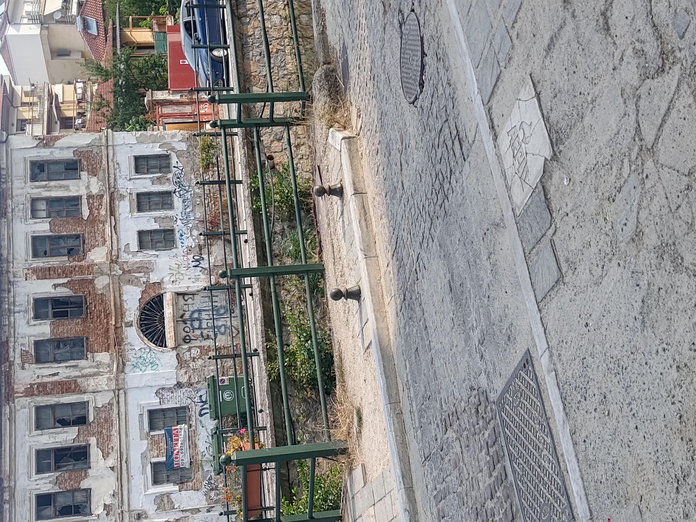

Πόσες φορές έχουμε κάτσει στα ίδια τραπέζια, με τους ίδιους ανθρώπους, ψάχνοντας να βρούμε τι έφταιξε; Φταίνε οι άλλοι, φταίει το σύστημα, έτσι είναι τα πράγματα εδώ, δεν πρόκειται να αλλάξει τίποτα...
Τα λέμε, κουνάμε το κεφάλι και μετά γυρίζουμε καθένας στην καθημερινότητά του.
Αν όμως αφήσουμε για λίγο στην άκρη τις δικαιολογίες και κοιταχτούμε καθαρά, η αλήθεια είναι μία: ο τόπος μας πληρώνει το τίμημα των δικών μας επιλογών. Πλήρωσε την ανοχή μας. Πλήρωσε το ότι συνηθίσαμε στα λίγα, μάθαμε να συμβιβαζόμαστε και αφήσαμε τη φαγωμάρα να μας χωρίζει. Πλήρωσε το ότι εμπιστευτήκαμε ξανά και ξανά τις ίδιες νοοτροπίες, περιμένοντας εκ θαύματος να δούμε διαφορετικό αποτέλεσμα.
Και το πιο σκληρό; Βλέπουμε τα νέα παιδιά να φεύγουν γιατί νιώθουν ότι εδώ ο χρόνος έχει κολλήσει.
Όμως ο τόπος αυτός δεν είναι καταδικασμένος. Δεν του λείπει ούτε το μυαλό, ούτε η ομορφιά, ούτε οι άξιοι άνθρωποι. Υπάρχει ακόμα φρέσκο αίμα. Υπάρχουν επαγγελματίες που παλεύουν στην αγορά 365 μέρες τον χρόνο, άνθρωποι με καθαρές ιδέες και μεράκι που αρνούνται να σηκώσουν τα χέρια ψηλά.
Η μόνη διαφορά είναι ότι πρέπει επιτέλους να στηρίξουμε αυτή τη δική μας τη βάση. Να αφήσουμε στην άκρη τα παλιά κολλήματα, να σταματήσουμε να κοιτάμε τι κάνει ο διπλανός για να τον κατηγορήσουμε και να δούμε πώς θα προχωρήσουμε μαζί.
Δεν περιμένουμε κανέναν σωτήρα να μας σώσει. Η αλλαγή στη νοοτροπία μας είναι το μόνο πράγμα που μπορεί να δώσει ξανά ανάσα στον τόπο.
← Επιστροφή στα Άρθρα